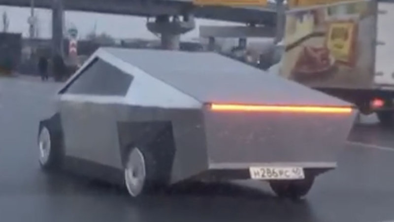
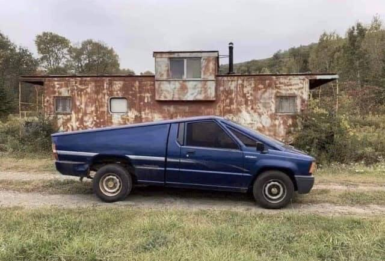
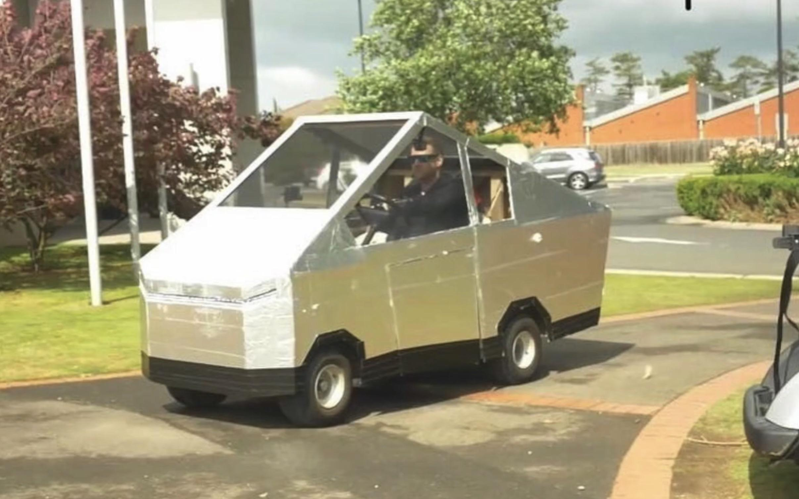

Several alternatives to the Tesla Cybertruck have taken to the streets in the wake of the company's susprise announcement on November 21st. Aiming to capitalize on the response to the truck's unique form factor, other automakers such as Dodge (pictured at right) have announced their own takes on the Cybertruck's eye-searing style.
Several automakers have already launched alternatives to Tesla's Model S sedan and Model X SUV, and these various Cybertruck competitors are only the latest examples of a common trend since the debut of the Model S in 2012.
Cybertruck production is slated to begin in 2021, and will evidently be entering a market already packed with rivals.


TESLA CYBERTRUCK INSPIRES COMPETITORS
RIPOFFS TAKE TO STREETS

The newly-announced Dodge CyberRam
